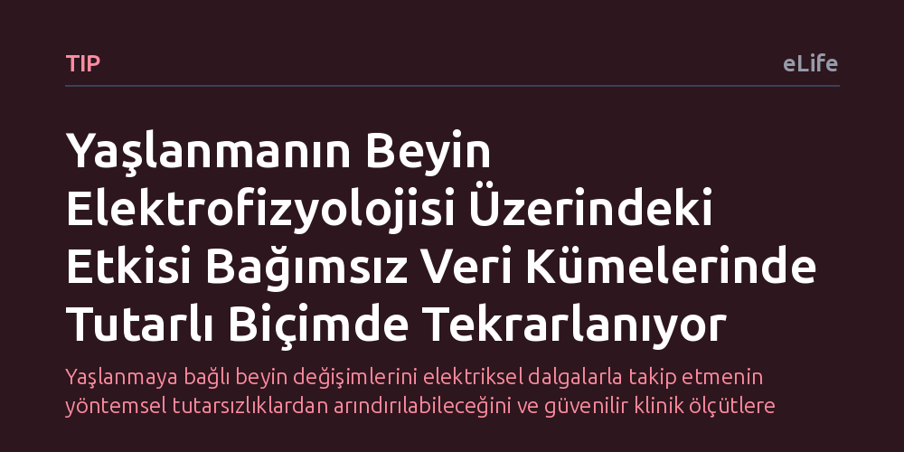

TIP · eLife · 2026-10-19
Araştırmacılar, yaşlanmanın dinlenme halindeki beyin elektrofizyolojisine etkisini tüm frekans ve beyin alanlarını kapsayan yeni bir modelle inceledi. Yaşlanmanın beyin dalgalarındaki etkisinin açık erişimli veri setlerinde güvenilir biçimde tekrarlandığı, ancak beyin doku hacmi hesaba katıldığında kısmen değiştiği tespit edildi.
Yaşlanmaya bağlı beyin değişimlerini elektriksel dalgalarla takip etmenin yöntemsel tutarsızlıklardan arındırılabileceğini ve güvenilir klinik ölçütlere dönüştürülebileceğini gösteriyor.

İnsan beyni yaşlandıkça sadece unutkanlık gibi belirtilerle değil, sinir hücrelerinin birbiriyle kurduğu elektriksel iletişim biçiminin değişmesiyle de farklılaşır. Kafatasının dışından yapılan elektrofizyolojik ölçümler, nöronların ürettiği ritmik dalgaların yaşla beraber nasıl bir değişim geçirdiğini doğrudan izlememize olanak tanır. Ancak dünya genelinde uzayan insan ömrüyle birlikte sağlıklı beyin yaşlanmasını takip edebilmek, klinik açıdan güvenilir ve standartlaştırılmış ölçütlere sahip olmayı zorunlu kılmaktadır.
Ne var ki bugüne kadar yapılan araştırmalarda ciddi bir yöntem karmaşası yaşanıyordu. Farklı laboratuvarların kullandığı analiz teknikleri, incelenen frekans aralıkları ve beyin bölgeleri arasındaki büyük farklılıklar, araştırmacıların ortak bir paydada buluşmasını engelledi. Bir çalışmanın yaşlanmaya bağladığı elektriksel işaret başka bir çalışmada doğrulanamıyor; bu durum beyin dalgalarının güvenilir bir biyobelirteç olarak tıpta kullanılmasını geciktiriyordu.
Araştırmacılar bu yöntemsel belirsizliği aşmak amacıyla, gözleri kapalı dinlenme durumunda kaydedilen manyetoensefalografi (MEG) verilerini inceleyen yeni bir yaklaşım geliştirdi. 'GLM-Spektrumu' adı verilen bu yöntem, beynin yalnızca belirli bir bölgesine veya kısıtlı bir frekans bandına odaklanmak yerine, tüm kafayı ve tüm frekans aralığını kapsayan kesintisiz bir yaşlanma profili ortaya koymaktadır. Bu sayede elde edilen veriler standartlaştırılarak araştırmacılar arasında kolayca paylaşılabilir ve üst analizlere uygun hale getirildi.
Ekip, geliştirdikleri yöntemi açık erişimli büyük MEG veri tabanları üzerinde test etti. Böylece tek bir merkezin veya küçük bir grubun sonuçlarına bağlı kalmadan, yaşlanmanın beyin sinyalleri üzerindeki izinin gerçekten bağımsız veri kümelerinde tekrarlanıp tekrarlanmadığını sınama fırsatı buldular.
Elde edilen sonuçlar, yaşlanmanın beyin elektrofizyolojisinde bıraktığı izin oldukça dirençli olduğunu ve farklı açık erişimli veri kümelerinde tutarlı biçimde tekrarlandığını gösterdi. Yaygın olarak hesaba katılan demografik ve teknik değişkenler modele eklense bile, yaşlanmaya bağlı elektriksel değişim profili sağlamlığını korudu. Bu durum, beyin dalgalarındaki yaşlanma izinin yöntemsel bir yanılsama olmadığını açıkça ortaya koydu.
Bununla birlikte araştırma çok kritik bir gerçeği de gün yüzüne çıkardı: Beyindeki gri madde hacmi modele dahil edildiğinde, yaşlanmanın elektriksel profili üzerindeki etkisinin kısmen azaldığı görüldü. Dahası, frekans profilindeki farklı bileşenlerin etki büyüklüklerinin birbirinden çok farklı olduğu anlaşıldı. Bu da yaşlanma etkisi ile beyin hacim kaybı gibi fiziksel değişimler birbirinden ayrıştırılmak istendiğinde, teoride yeterli görünen birçok araştırmanın aslında yetersiz istatistiksel güce sahip olabileceğini gösterdi.
Bu bulgular, gelecekte beyin sağlığını korumaya yönelik klinik çalışmalarda abartılı varsayımlara kapılmadan, sağlam adımlarla ilerlemenin yol haritasını sunuyor. Beyin yaşlanmasını izlemek için tasarlanacak yeni çalışmalarda, incelenecek frekans bileşenine özel örneklem büyüklüğü hesaplamalarının yapılması gerektiği ve yapısal beyin küçülmesinin hesaba katılması şartı netleşmiş oldu.
Sonuç olarak çalışma, beyin dalgalarını klinik birer sağlık göstergesine dönüştürme yolunda yöntemsel bir standart oluşturuyor. Araştırmacıların ortak bir modelleme diliyle konuşabilmesi, yaşa bağlı bilişsel değişimlerin erken tespitinde elektriksel biyobelirteçlerin çok daha güvenilir biçimde değerlendirilmesine kapı aralıyor.